Development and Optimization of Physically Cross-linked Chitosan/PVA/Gelatin Composite Hydrogels for Antibiotic-Loaded Wound Dressing Applications
Manuscript in preparation.
Biomedical Engineering graduate from Khulna University of Engineering & Technology, interested in biomaterials, hydrogel-based drug delivery, wound healing, tissue engineering, biomedical devices, and computational approaches in healthcare.
Contact: shairaafra.kuet.bme@gmail.com
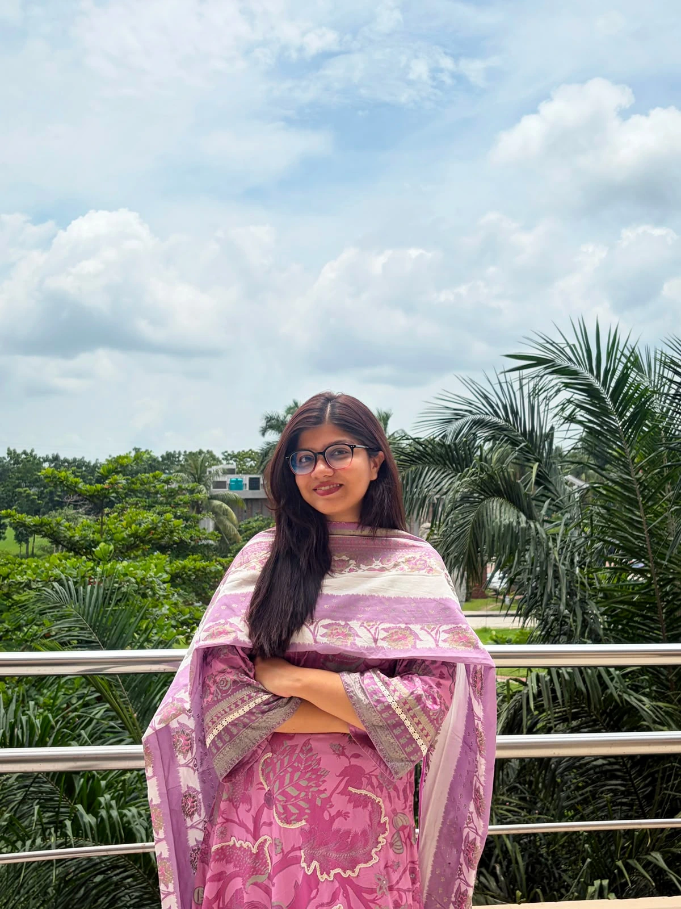
My undergraduate thesis focused on the development and characterization of hydrogel-based wound dressings, exploring their potential for biomedical applications and drug delivery. This experience introduced me to experimental biomaterials research and material characterization, including FTIR, XRD, SEM, UV-Vis spectroscopy, thermal and mechanical testing, swelling and water retention studies, gel fraction, hydrolytic degradation, porosity evaluation, water vapor transmission rate (WVTR), and blood clotting index analysis. I have also completed the Training on Laboratory Animals Used in Biomedical Sciences at icddr,b, which is a National Institutes of Health (NIH) certified animal facility.
Beyond experimental research, I have explored computational biology and AI-driven healthcare through conference publications on identifying potential therapeutic targets across multiple cancers and developing an AI-enabled assistive device for visually impaired people. My other academic projects include machine learning-based glucose monitoring, computational modelling of arterial wall mechanics using COMSOL Multiphysics, and digital hearing aid development using MATLAB. I have also completed coursework in supervised machine learning and AI for medical diagnosis, alongside training in Python-based data analysis.
Looking ahead, I aspire to pursue graduate studies and research in biomaterials, regenerative medicine, tissue engineering, and wound healing, while exploring how machine learning can complement experimental research and advance healthcare innovation. I am eager to learn, collaborate across disciplines, and contribute to research that translates engineering principles into meaningful biomedical solutions.

Khulna University of Engineering & Technology (KUET), Khulna, Bangladesh
CGPA: 3.84/4.00 Overall Position: 4th (out of 30)
Undergraduate thesis: Development and Optimization of Physically Cross-linked Chitosan/PVA/Gelatin Composite Hydrogels for Antibiotic Loaded Wound Dressing Applications.
Semester-wise GPA details are available in the official transcript.
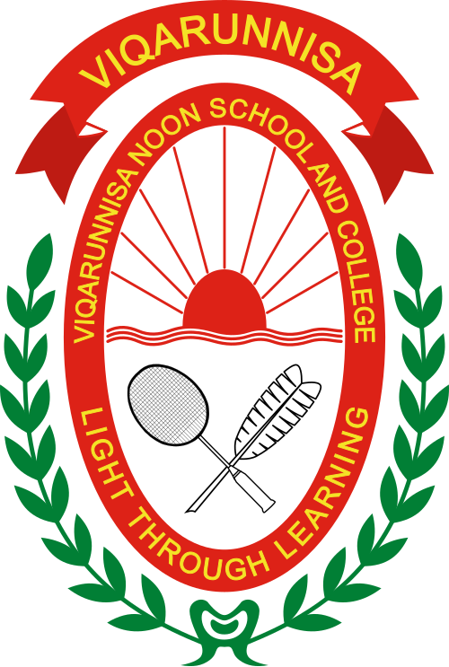
Viqarunnisa Noon School & College, English Version
GPA: 5.00

Mohammadpur Preparatory School & College, English Version
GPA: 5.00
Development and Optimization of Physically Cross-linked Chitosan/PVA/Gelatin Composite Hydrogels for Antibiotic Loaded Wound Dressing Applications
As I explored computational research during my undergraduate studies, I increasingly felt drawn to the other side of engineering: creating something tangible that could eventually be translated into real-world healthcare. I wanted to explore how biomedical engineering could move beyond theoretical understanding to develop practical solutions that directly address human needs. This desire became more personal as I watched news coverage of the July 2025 aircraft crash at a school in Dhaka, where many children sustained severe burn injuries and endured prolonged suffering. It made me reflect on the need for better wound-care solutions and strengthened my interest in exploring how engineering could contribute to healing.
My curiosity led me to advanced wound-dressing materials that could do more than cover an injury by managing moisture, delivering therapeutic agents, and supporting the healing process. This introduced me to biomaterials, regenerative medicine, and tissue engineering, shaping the direction of my undergraduate thesis on hydrogel-based wound dressings. Rather than focusing on a single formulation, I investigated how polymer concentrations and mixture ratios influence material properties and wound-dressing functionality for different wound applications, with the aim of building a conceptual foundation. Through fabrication and systematic characterization, I sought to understand how material composition could be tailored to different therapeutic needs. This research became my first step toward a broader goal: translating materials science into practical biomedical innovations that can ultimately improve patient care.

Explore my research journey: Click the sections below to learn about the research assignments, formulation design, experimental process, characterization and performance testing, limitations, and future work. Each section opens to reveal photographs and details of the work I carried out.
A progression from literature-led research planning to independent formulation screening, hands-on characterization, and identifying the next steps needed to complete the study. The emphasis throughout was on building reliable experimental skills and understanding how formulation choices affect hydrogel behaviour.
Drawing on papers studied and presented during fourth-year, first-semester seminars, I explored smart and stimuli-responsive hydrogels, reversible hydrogel systems, natural and synthetic polymers, and hydrogel properties relevant to wound care. I also reviewed studies on diabetic wounds, burn wounds, and wound-dressing materials. My initial interest was in a smart material targeting a particular condition, but the literature helped me define a more feasible experimental direction.
With a limited experimental timeline and biomaterials work still developing in the department's laboratory facilities, I chose to investigate a general-purpose wound-dressing hydrogel rather than a disease-specific system. I identified desired functions such as moisture management, useful mechanical strength, thermal behaviour, antimicrobial potential, and the ability to carry therapeutic agents. A central question emerged: how do polymer stock concentration and Chitosan:PVA:Gelatin blend ratio affect formulation and performance?
I prepared and compared candidate formulations with different stock concentrations and polymer ratios, observing which blends formed stable structures and which did not. I learned to conduct swelling, water-retention, gel-fraction, hydrolytic-degradation, porosity, and water-vapour-transmission-rate tests. Early attempts exposed practical issues, including unstable samples and the need for replicate measurements. I repeated preparations when necessary rather than relying on a single observation, and used additional laboratory time during the Ramadan vacation to strengthen my practical skills.
After the initial screening, I focused on stock-solution concentrations of 3%, 5%, and 10% and compared different blend ratios. I refined my preparation and record-keeping practices as I learned how storage, incubation, and interruptions to electricity or equipment could affect sample integrity. When a sample failed to form a stable structure or became unusable, I repeated the preparation where feasible to check whether the issue was reproducible. I also learned ATR-FTIR operation with guidance from a faculty member.
To evaluate properties beyond the tests available in my own laboratory, I initiated contact with external facilities and submitted applications for testing. Through collaboration with the Materials Science and Engineering facility, I obtained tensile-test measurements for tensile strength and elongation at break using a universal testing machine. I also arranged antibacterial testing and UV-Vis spectroscopy through an external university laboratory, observed the procedures, and learned from the laboratory personnel involved. SEM and XRD were obtained for one sample through an external research facility, providing an introduction to these characterization techniques.
I continued beyond the defense by arranging thermal analysis using simultaneous TGA-DSC through the Mechanical Engineering department and blood-clotting assessment through an external facility. I observed the testing workflows and learned about the procedures, while recognizing that any quantitative interpretation must be supported by verified instrument records and appropriate controls.
I brought together the formulation and characterization work, reviewed what had been learned, and identified the remaining evidence needed for a stronger manuscript. The manuscript remains in preparation. In-vitro cytotoxicity, in-vivo evaluation, and histopathological assessment are future goals, subject to funding, suitable facilities, and institutional approvals. Because the project has been supported by my own resources and my family's help, I have prioritised building practical competence step by step and preparing to complete the additional studies when the opportunity becomes available.
Research scope: the work so far is a formulation-development and characterization study. The portfolio does not present the hydrogel as clinically validated, and it does not claim that in-vitro, in-vivo, or histopathological testing has already been completed.
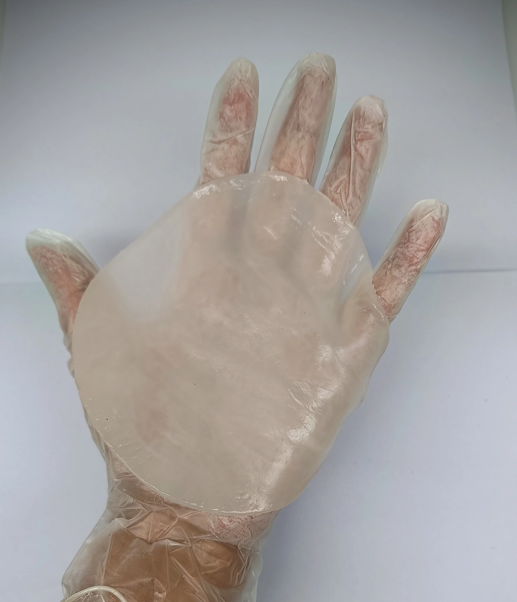
Final hydrogel sample
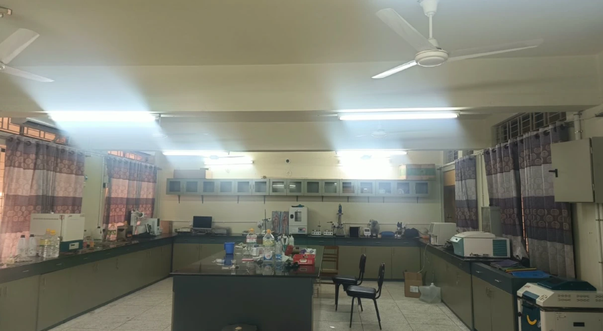
Laboratory environment
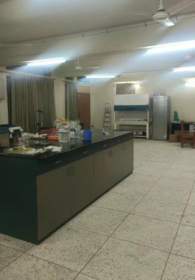
Preparation workspace
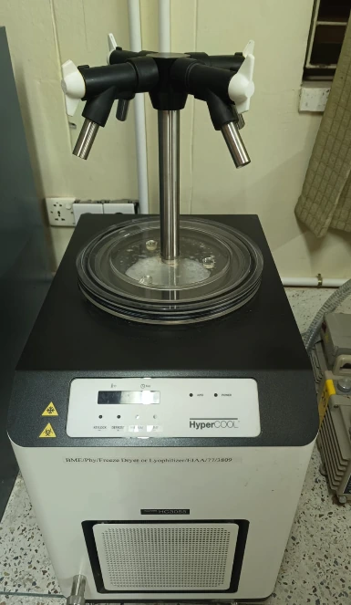
Freeze-drying equipment

UV sterilization setup

Alongside developing the hydrogel formulations, I dedicated time to learning how each characterization and performance test is carried out, why it is used, and what it can reveal about a material. This hands-on experience helped me connect material composition with measurable properties and build practical laboratory knowledge that I hope to carry into future biomaterials research and higher studies. The methods and photographs below document the procedures I explored and the testing experience I gained.
Each test interface presents the test name, research question, concise explanation, and an expandable methodology. Experimental results are not displayed because the manuscript is still in preparation.
How effectively can our hydrogel absorb liquid under different conditions?
Swelling ratio measures liquid uptake relative to the initial dry mass. Initial screening considered different media, while the final comparison focused on deionized water and pH-dependent swelling.
Swelling ratio was used to quantify the liquid absorbed by the dry hydrogel relative to its initial dry mass.
Calculation: Swelling ratio (%) = ((Ws − Wd) / Wd) × 100, where Ws is the swollen sample weight and Wd is the initial dry weight.
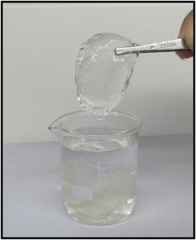
How effectively can our hydrogel retain absorbed water over time?
Water retention indicates how much of the absorbed water remains in the swollen hydrogel during the observation period.
Water retention capacity describes how much water remains in the hydrogel after it has swollen, measured over the selected observation period.
Calculation: Water retention (%) = (Wt / Ws) × 100, where Ws is the equilibrium swollen sample weight and Wt is the sample weight at time t.
How much of our hydrogel remains as an insoluble network after water treatment?
Gel fraction estimates the proportion of the initial dry material that remains after water treatment and subsequent drying.
Gel fraction estimates the proportion of the initial dry material that remains as an insoluble network after water treatment and subsequent drying.
Calculation: Gel fraction (%) = (Wf / Wi) × 100, where Wi is the initial dry weight and Wf is the final dry weight after water treatment and drying.
The exact water-treatment duration and drying settings are not specified here because they have not been confirmed in the available protocol.
How much pore space is present within our freeze-dried hydrogel structure?
Porosity was estimated using ethanol displacement to assess the void fraction within the freeze-dried hydrogel.
The ethanol displacement method was used to estimate the void fraction of freeze-dried hydrogel samples.
Calculation: Porosity (%) = ((V1 − V3) / (V2 − V3)) × 100, where V1 is the initial ethanol volume, V2 is the volume reading for the sample and ethanol together, and V3 is the remaining ethanol volume after sample removal.
How readily can water vapor pass through our hydrogel dressing membrane?
WVTR estimates the amount of water vapor passing through a defined membrane area over time, a relevant property for wound dressings.
WVTR was assessed using a gravimetric cup setup to estimate water vapour transmission through the hydrogel membrane.
Calculation: WVTR = (Wi − Wf) / (A × t), expressed in g/m²/day, where Wi and Wf are the initial and final masses, A is the exposed membrane area, and t is the exposure time in days.

How does the hydrogel change during exposure to an aqueous environment?
Hydrolytic degradation tracks mass loss during water exposure, helping assess the material's stability under aqueous conditions.
This test tracked hydrogel mass change during exposure to an aqueous environment over a 7-day period. It evaluated hydrolytic degradation only; enzymatic degradation was not part of the completed test.
Calculation: Degradation (%) = ((Wi − Wt) / Wi) × 100, where Wi is the initial weight and Wt is the weight at the selected degradation time.
Future work: Enzymatic degradation could be studied separately because enzymes present in wound fluid may affect polymer breakdown in ways that a simple aqueous hydrolysis test does not capture.
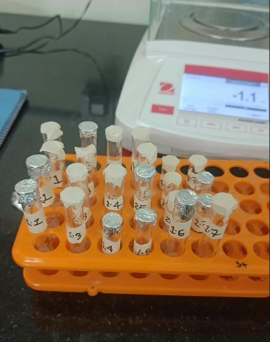
How much tensile force can our hydrogel withstand, and how much can it stretch before breaking?
Tensile strength and elongation at break were measured using a Tinius Olsen 50ST universal testing machine. Testing was carried out through collaboration with the Civil Engineering and Materials Science and Engineering departments at KUET.
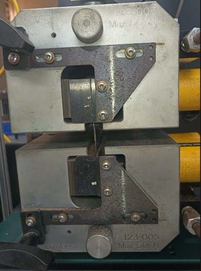
Instrument:Tinius Olsen 50ST universal testing machine.
Measurements:tensile strength and elongation at break.
Facility collaboration:Civil Engineering and Materials Science and Engineering departments, KUET.
Which chemical functional groups and potential intermolecular interactions are present in our hydrogel?
ATR-FTIR spectroscopy was used to examine characteristic absorption bands in the polymer components and composite hydrogel.
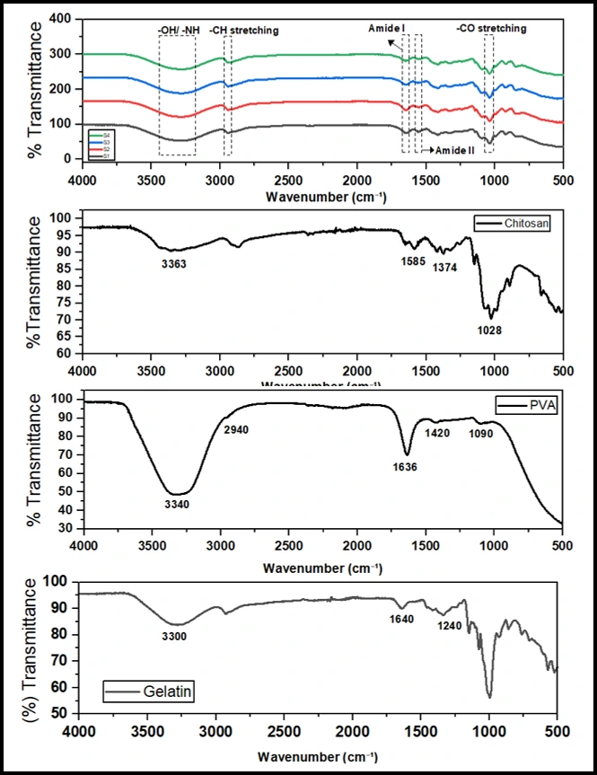
Instrument:Shimadzu ATR-FTIR spectrometer.
Purpose:identify characteristic absorption bands and examine potential interactions among the polymer components.
How does our hydrogel behave when exposed to increasing temperatures?
Simultaneous thermogravimetric analysis (TGA) and differential scanning calorimetry (DSC) were performed using a LINSEIS STA system in collaboration with the Mechanical Engineering department.

Instrument:LINSEIS STA simultaneous TGA–DSC system, in collaboration with the Mechanical Engineering department.
Confirmed conditions:approximately 27–801°C at about 10°C/min; measurement date 23 September 2026.
The analysis records mass change and heat-flow-related thermal events during heating.
Can our hydrogel be investigated as a carrier for antibiotic release over time?
UV–Vis spectroscopy was used to monitor levofloxacin and ciprofloxacin release from drug-loaded hydrogel samples over a 24-hour observation period.
Instrument:UV–Vis spectrophotometer.
Antibiotics:levofloxacin (288 nm) and ciprofloxacin (274 nm).
Drug-loaded samples were immersed in PBS (pH 7.4) under continuous shaking at 300 rpm; aliquots were collected at 0.5, 1, 3, 6, 12, and 24 hours and replaced with fresh PBS. The study covered 24 hours because of resource constraints.
Does the tested sample show antibacterial activity under the assay conditions?
Antibacterial testing was conducted in collaboration with Khulna University to examine the tested samples under the assay conditions.
Test: agar-plate inhibition-zone assay, conducted in collaboration with Khulna University.
What preliminary biological safety signal can be observed under the assay conditions?
The Brine Shrimp Lethality Assay (BSLA) was included as a preliminary biological screening assay. It provides an initial screening signal and is not a substitute for mammalian cell cytotoxicity testing.
Test: Brine Shrimp Lethality Assay (BSLA). Purpose: preliminary biological screening. This assay does not replace mammalian-cell cytotoxicity testing.

Because my university does not currently have the animal facility and institutional approval pathway needed for undergraduate in-vivo studies, and in-vitro testing was beyond my available budget, I chose to prepare for future work by completing foundational animal-research training at icddr,b in August 2026. The training introduced supervised handling, husbandry, welfare, research ethics and wound-healing models. Read about the training and view the photographs.
Published conference papers are listed separately from manuscripts in preparation.
S. B. Shuvo, S. Hossain, S. A. Redhila, and U. Bose
DOI: 10.1109/EICT68394.2025.11355627 · Read paper ↗
During my third year, first semester (3-1), a five-month interruption in regular academic activities due to political unrest gave me an opportunity to explore research skills beyond my primary discipline. When a senior was looking for junior collaborators for a computational biology project, I joined the team to learn the field and contribute to the study.
Working alongside my co-authors, I learned to use bioinformatics tools and apply computational methods to investigate shared molecular patterns across four cancer types. This experience introduced me to computational biology and encouraged me to explore interdisciplinary research alongside my main work in biomaterials.
Planning, computational analysis, and manuscript preparation in collaboration with the co-authors.
Presented this research at the 1st National Conference on Research, Industry and Collaboration in Biomedical Engineering, Jashore University of Science and Technology, on 22 June 2025. The experience gave me an opportunity to communicate computational research findings to a conference audience and engage with researchers working in biomedical engineering.
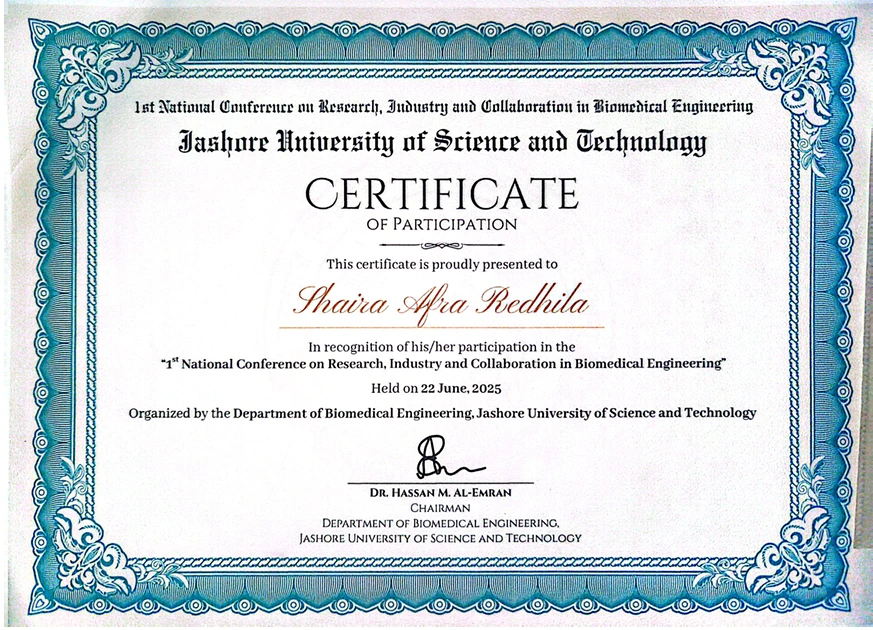
S. Datta, G. M. M. Rahman, P. Majumder, S. A. Redhila, et al.
DOI: 10.1109/BECITHCON69222.2025.11504107 · Read paper ↗
During the same five-month interruption in regular academic activities caused by political unrest, I wanted to expand my research experience beyond computational biology and strengthen my scientific writing skills. I was already familiar with the project developed by my friend and first author, Shithi Dutta, having followed her work and helped with some technical aspects. This familiarity provided an opportunity for us to collaborate on preparing the conference manuscript.
Through this experience, I developed a better understanding of literature searching, organizing technical information, and presenting research in a structured academic format. Working on a conference paper before beginning my undergraduate thesis gave me a useful foundation in scientific writing and research communication.
Manuscript preparation in collaboration with the project team.
This experience strengthened my scientific writing skills and helped me approach my thesis with a clearer understanding of how to organize research, support statements with literature, and communicate technical work effectively.
Manuscript in preparation.
Manuscript in preparation.
Manuscript in preparation for Biomedical Signal Processing and Control.
Each project is listed by title and course context. Select a project to explore its description, technical details, and available photographs or report.
Group project
We developed a low-cost, AI-driven glucose concentration estimation system as a potential alternative to conventional spectrophotometric procedures in resource-constrained settings. Phototransistors in the sensing mechanism measured glucose solutions and supported real-time data acquisition. Python was used to collect and visualize data and generate absorption spectra for glucose concentration analysis. The collected measurements were organized into a structured dataset, and a Random Forest machine-learning algorithm was used to estimate glucose levels. A user-facing application was also developed to track and visualize data for users and healthcare professionals.
Skills demonstrated: Biomedical instrumentation, Arduino-based prototyping, optical sensing, phototransistor interfacing, enzymatic analysis, experimental data collection, Python visualization, and dataset preparation.

Group project
Developed a portable smart-band prototype for real-time monitoring of heart rate, temperature, and pressure-related readings using an Arduino Nano, HW827 pulse sensor, and BMP180 sensor. An LCD displayed readings locally, while an HC-05 Bluetooth module transmitted them to the Ardutooth mobile app. The project was initially developed for an EEE Day intra-university competition and was further developed as the ECE 3216 course project in the third year, second semester.
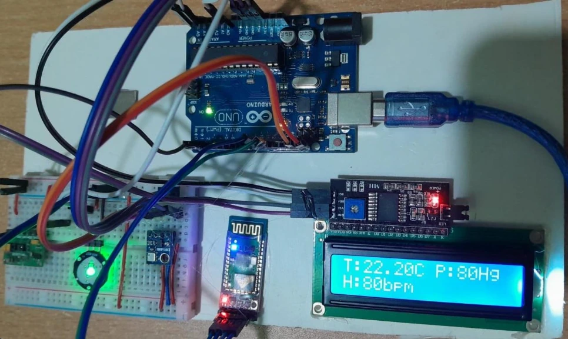

Designed and implemented a low-cost continuous positive airway pressure (CPAP) prototype to explore sensor-based breathing monitoring and automated air-pump control.
A thermistor positioned in the mask detected temperature variations associated with inhalation and exhalation. An Arduino Uno processed sensor readings and compared the calculated temperature with a predefined threshold. An L298N motor driver controlled a 12 V air pump, while a buck converter supplied the required lower voltage to the control electronics. An OLED display showed temperature readings and operating status.
The control program was developed in C++ using the Arduino IDE. It converted thermistor readings into temperature values, displayed measurements through the OLED and Serial Monitor, and adjusted the pump's operating state according to threshold conditions. The documented control logic included a temporary increase in pump speed when the measured temperature fell below the defined threshold.
Skills demonstrated: Arduino programming, embedded systems, thermistor interfacing, temperature monitoring, PWM motor control, circuit integration, feedback control, and OLED-based interfaces.
This was an engineering prototype, not a clinically validated CPAP device or a proven method for diagnosing or treating sleep apnea.

Group project
Investigated the mechanical behaviour of arterial tissue through computational modelling in COMSOL Multiphysics, focusing on how internal pressure, axial stretch, and time-dependent material behaviour influence arterial deformation and stress distribution.
The model used the Holzapfel-Gasser-Ogden (HGO) constitutive framework to represent the nonlinear, anisotropic, hyperelastic response of arterial tissue. The workflow included defining material parameters, constructing the geometry, configuring solid mechanics, generating a mesh, and running stationary and time-dependent studies. A five-branch viscoelastic representation was included to investigate stress relaxation.
Stationary simulations examined relationships among internal pressure, axial stretch, and the inner radius of a modelled carotid artery. Radial stress distributions were examined under varying loading conditions. Time-dependent analysis explored changes in axial force after an additional stretch was applied.
Skills demonstrated: COMSOL Multiphysics, computational biomechanics, finite element modelling, constitutive material modelling, hyperelasticity, viscoelasticity, and stress analysis.
This was a computational investigation. Experimental validation and patient-specific modelling remain potential future extensions, so the results should not be interpreted as clinically validated predictions.
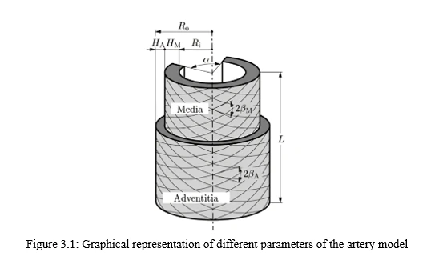
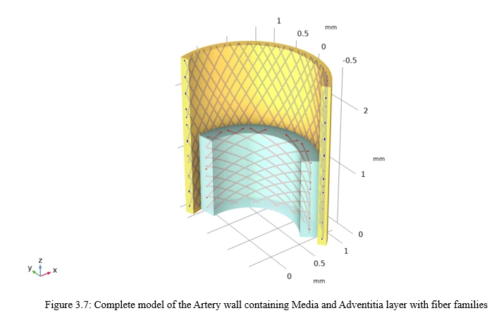


Group project
Developed a MATLAB-based digital hearing-aid simulation to investigate audio enhancement techniques for hearing assistance. The workflow involved processing a recorded audio signal, adding noise to represent a noisy listening environment, applying wavelet-based denoising, and using FFT and inverse FFT operations for frequency shaping. Gain modification, signal normalization, and amplitude control were also considered.
Skills demonstrated: MATLAB, digital signal processing, wavelet denoising, FFT/IFFT analysis, frequency shaping, gain adjustment, signal normalization, and quantitative signal evaluation.
Designed and simulated a basic pacemaker circuit to mimic and regulate abnormal heart rhythms using biomedical instrumentation and signal-processing concepts. The project focused on understanding ECG patterns and delivering appropriate electrical pulses as a learning exercise in low-cost cardiac support system design.
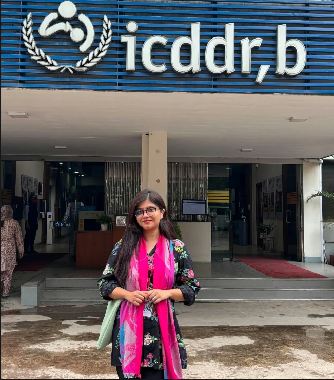
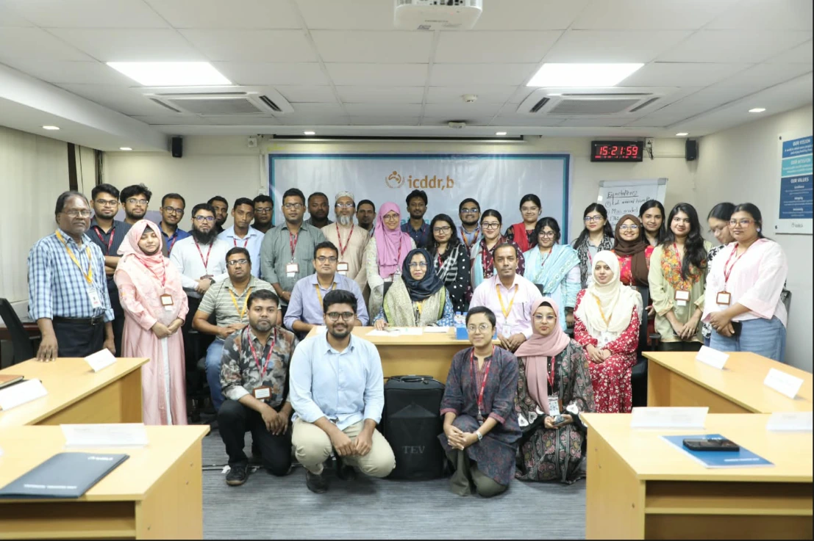
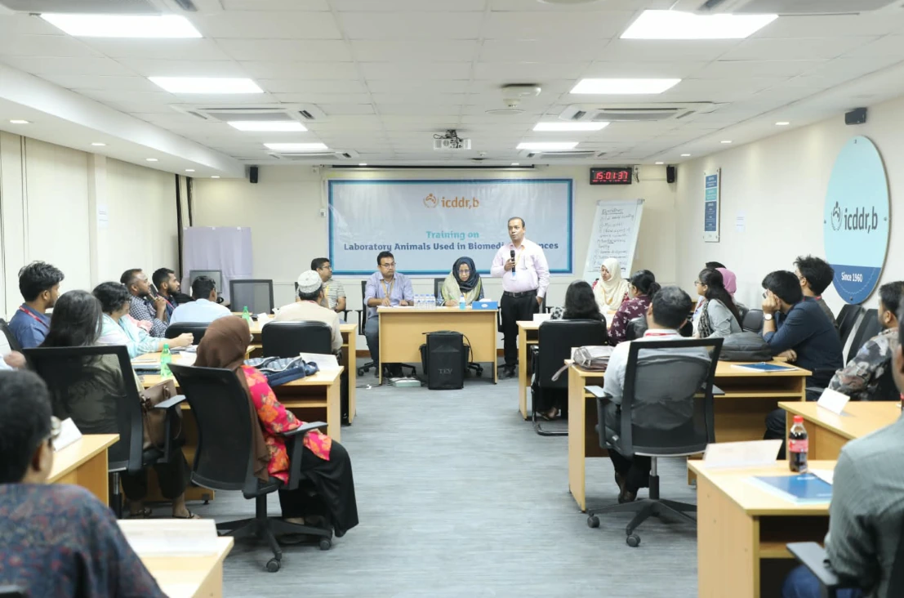

icddr,b | 23–25 August 2026 | Sasakawa Seminar Room 1 and Animal Resources Facility (ARF). I undertook this training to build foundational skills for future in-vivo research, as my university does not currently provide the animal facility and institutional approval pathway needed for me to conduct animal studies, while in-vitro testing was beyond my available budget. The programme combined lectures, discussion and supervised practical learning on handling and restraint of mice, rats, guinea pigs and rabbits; intraperitoneal and intramuscular administration routes; animal husbandry, housing, feeding, breeding-facility routines and health monitoring; welfare and research ethics; the 3Rs; and an introduction to wound induction and wound-healing models. This was training exposure, not an animal experiment conducted for my thesis or a claim of independent authorization. I hope to apply this foundation during future postgraduate research when suitable facilities, approvals and resources are available.

Central Computer Center (CCC), Khulna University of Engineering and Technology (KUET) | Enhancing Digital Government & Economy (EDGE) Project, Bangladesh Computer Council, ICT Division | November–December 2024. Completed an 80-hour programme exploring Python libraries for data manipulation, visualization and analysis, including NumPy, Pandas, Matplotlib and Seaborn, with practice in organizing, processing, visualizing and interpreting datasets.
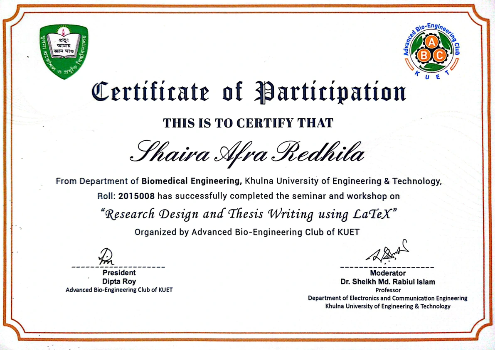
Institution: Advanced Bio-Engineering Club, KUET
Participated in the seminar and workshop on research design and thesis writing using LaTeX, organized by the Advanced Bio-Engineering Club of KUET.

Institution: Khulna University of Engineering & Technology (KUET) | Date: 19 February 2024
Participated in a workshop exploring innovation, entrepreneurship, and hardware projects within a Fab Lab ecosystem.


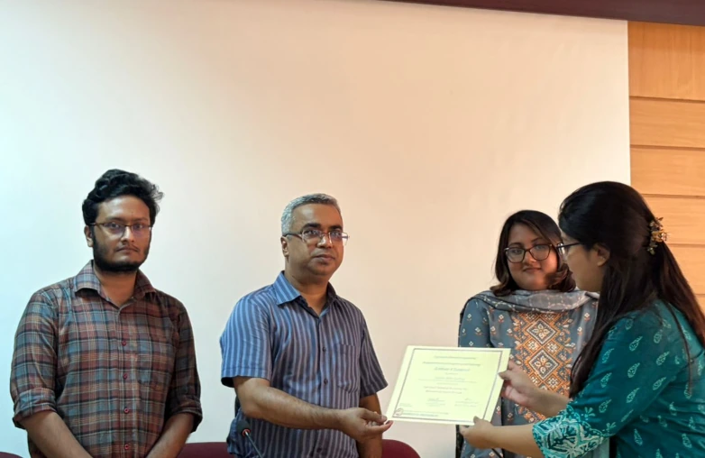
Participated in a practical wet-lab workshop for senior-year Biomedical Engineering students, covering laboratory, animal-lab, and biomaterials fundamentals, laboratory safety, and common experimental techniques. The programme included a demonstration of cellulose extraction from cotton and an opportunity to observe the processing steps involved in producing cellulose powder, along with exposure to nanofabrication techniques.
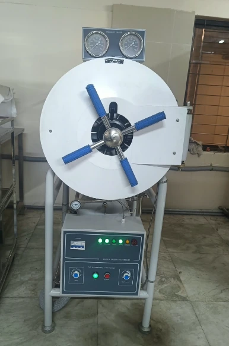
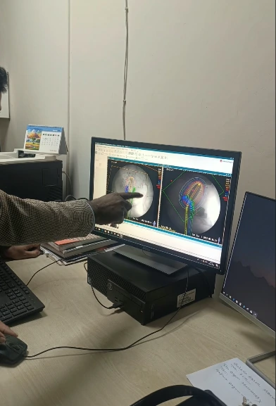


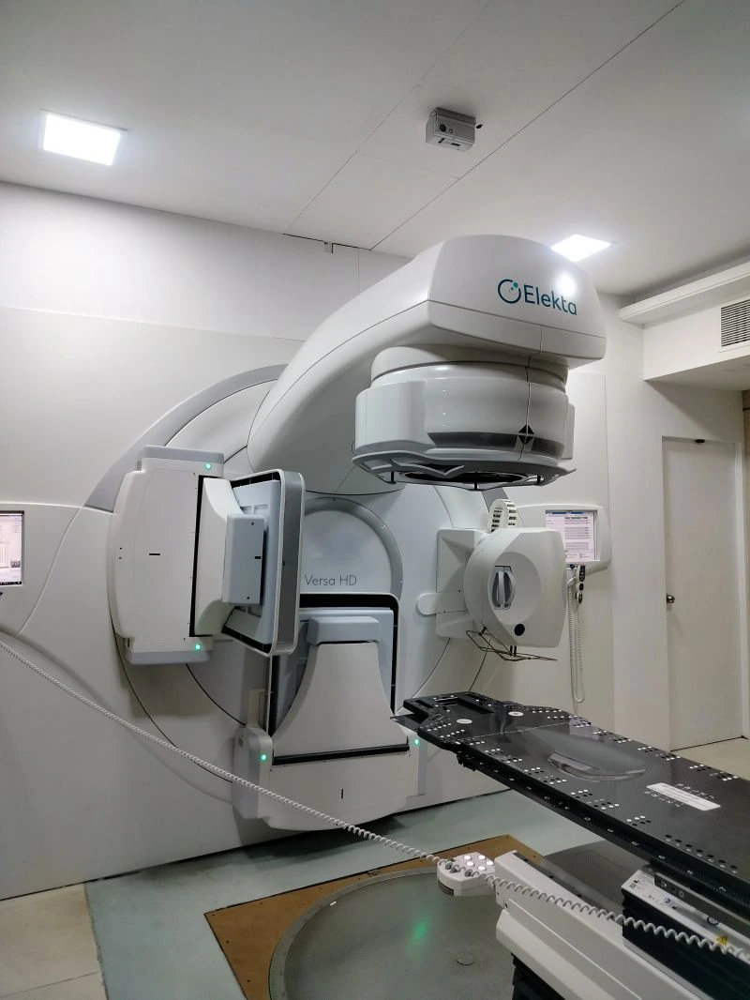

The KUET BME ’20 batch completed an industrial attachment at NEMEMW and TC C/A, gaining exposure to biomedical engineering practice in healthcare settings. Visits to the National Institute of Cancer Research & Hospital and the National Institute of Diseases of the Chest and Hospital included observation of central medical-gas systems, PSA oxygen generators, linear accelerators (LINAC), and other radiotherapy technologies. The attachment connected classroom concepts with clinical engineering practice and highlighted the role of biomedical engineers in hospital technology and patient care.

Institution: British Council Bangladesh
Date: 8 June 2018
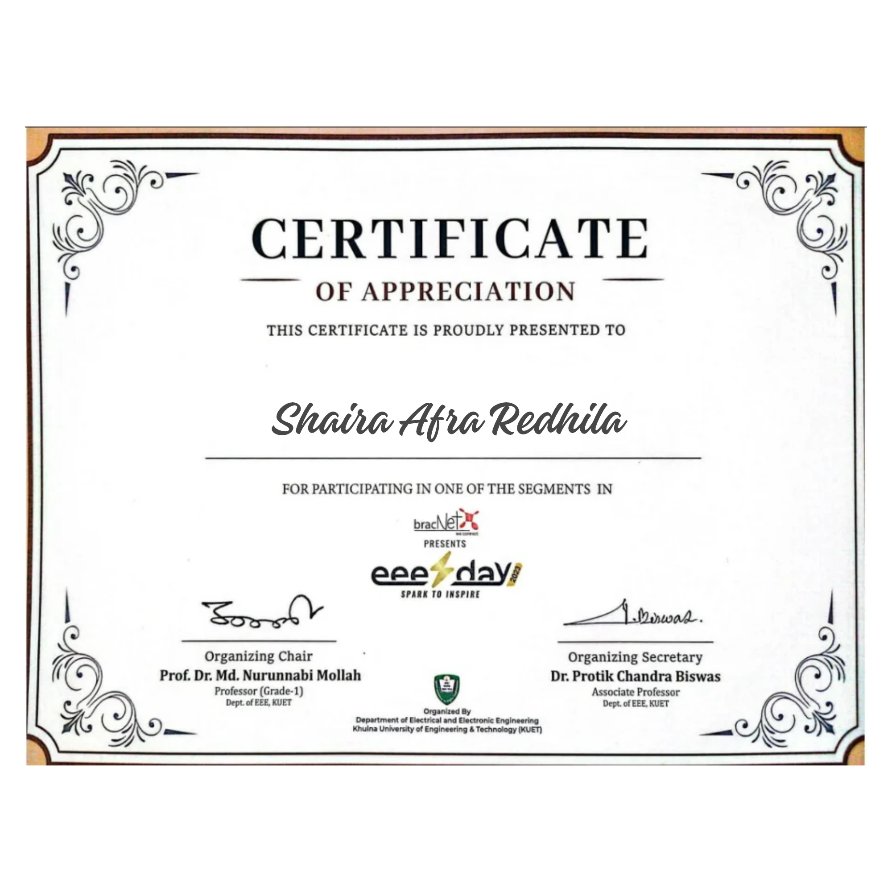
Institution: Department of Electrical and Electronic Engineering, KUET
Date: 2025

Institution: DeepLearning.AI, offered through Coursera
Date: 22 June 2025
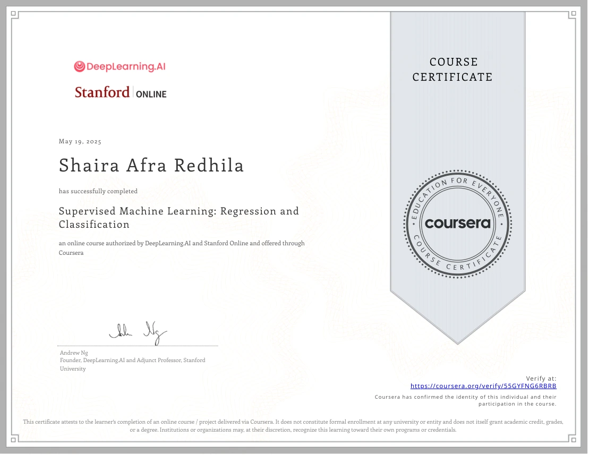
Institution: DeepLearning.AI and Stanford Online, offered through Coursera
Date: 19 May 2025
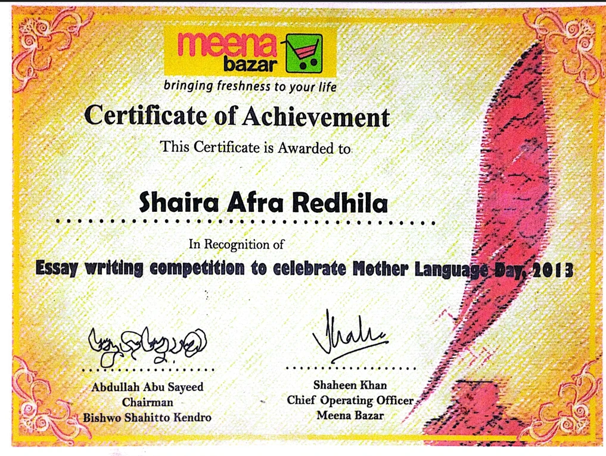
Institution: Meena Bazar, in recognition of the Mother Language Day 2013 essay-writing competition
Date: 2013
Awarded the prestigious Dean’s List Award by the Faculty of Electrical and Electronic Engineering at Khulna University of Engineering & Technology (KUET) for academic excellence. Academic records listed here include GPAs of 3.98/4.00 in the fourth year, 3.89/4.00 in the third year, and 3.83/4.00 in the first year.
Recognition for contributions as a Junior and Senior Executive.
Awarded in the Primary School Certificate (PSC) Examination.
Awarded in the Secondary School Certificate (SSC) and Higher Secondary Certificate (HSC) Examinations.
Hydrogel preparation, freeze-thaw crosslinking, freeze-drying, drug loading and release.
Swelling, water retention, gel fraction, biodegradation, porosity, pH responsiveness, and water vapor transmission rate (WVTR).
FTIR, UV–Vis spectroscopy, thermogravimetric analysis (TGA), and differential scanning calorimetry (DSC); experience with outsourced SEM and XRD characterization workflows.
Universal Testing Machine (UTM) tensile testing, Brine Shrimp Lethality Assay (BSLA), antimicrobial testing, and blood clotting index measurement.
Python, MATLAB, COMSOL Multiphysics, OriginPro, and Ansys.
Bulk and single-cell RNA-seq analysis, differential expression analysis, functional enrichment, and protein–protein interaction networks.
LaTeX, Microsoft Word, PowerPoint, Excel, and Canva.

Vice President | September 2025–September 2026
Senior Executive, IT & Resources | June 2024–September 2025
Junior Executive, Public Relations (initially), then IT & Resources | March 2023–June 2024
I began in Public Relations as a Junior Executive and transferred to IT & Resources after about one month, where I contributed to social-media posts, designs, banners, video content and event materials using Canva and CapCut. As I progressed to Senior Executive and then Vice President, I helped coordinate design work, guide junior executives, support club communications and events, and contribute to major activities, including a national-level event.

Supported training-related activities and coordination within the club.

Represented the organization in a campus ambassador role.

Helped organize BME Indoor 4.0 and contributed to event design materials, including banners and social-media posts. Also received the Champion award in the female darts segment and a Best Designer award for design contributions.
These links are examples of social-media designs and event materials. They are a small selection of a broader body of work that also included banners, certificates, press materials, and videos.
Selected design/post 1Selected design/post 2Selected design/post 3Selected design/post 4Selected design/post 5Selected design/post 6Professor, Department of Biomedical Engineering, Khulna University of Engineering & Technology (KUET)
Assistant Professor, Department of Biomedical Engineering, Khulna University of Engineering & Technology (KUET)